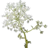

Correspondence Grimoire
Anti-Septic
Type
Oils95

Anise Essential OilOther Correspondences1
Antiseptic: destroys microbes and prevents their development.
Correspondence Grimoire

Anise Essential OilAntiseptic: destroys microbes and prevents their development.